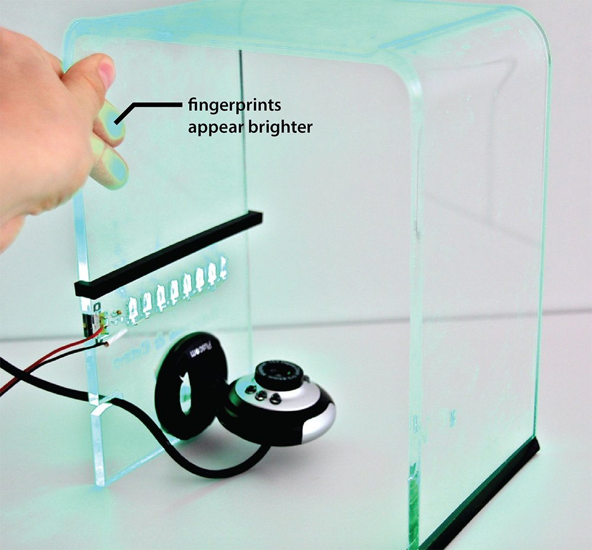

IAP 2017: Build your own multi-touch pad
Learn laser cutting, electronics breadboard prototyping, soldering, and computer vision in only two afternoons. In this hands-on IAP, we will build a multi-touch pad using the principles of FTIR (Frustrated Total Internal Reflection).
In the first session, we are going to build the hardware of your device. In the second session, we will add the software, i.e., the finger tracking and gesture recognition. All you need to bring is your laptop, we take care of the rest.

Session #1: Hardware hacking (Jan 19)
In the first session, you will build the hardware for your multi-touch pad. First, you will laser cut an acrylic sheet and use a heat gun to bend it into shape. After that, you will solder the LEDs and add a switch for turning the LEDs on/off. You will also solder the USB connector and cable, which you will use to connect the touch pad to your laptop. We will provide you with basic knowledge in electronics and give an intro to Arduino. Finally, you will add a camera that we will use for tracking the fingers.
Session #2: Finger tracking (Jan 20)
In the second session, you will use computer vision to track finger gestures on your multi-touch pad using the attached camera. For this, we will give an intro to computer vision with OpenCV (color-space conversions, thresholding, blob detection). At the end, we will host a contest for the best example application with some unique prizes for the most creative solutions.
